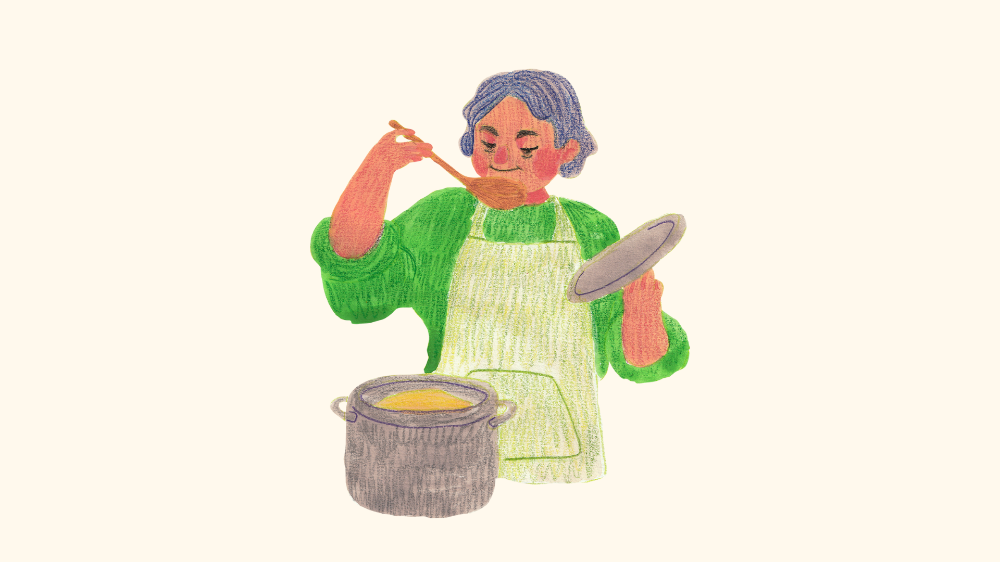

O Sabor e História nasceu com o propósito de levar mais do que receitas deliciosas – queremos compartilhar o sabor da tradição, da cultura e das histórias que tornam cada prato único.
Nosso objetivo é resgatar e valorizar as comidas que fazem parte da história das famílias brasileiras, aquelas receitas que têm um toque especial e um significado profundo para quem as prepara e as compartilha. Ao longo dos anos, a comida tem sido o elo que une as pessoas, e queremos continuar essa tradição, celebrando a culinária com histórias autênticas e cheias de sabor.
Em 2023, um grupo de entusiastas da culinária e da cultura brasileira decidiu criar o Sabor e História. Todos nós, apaixonados por comida e história, queríamos criar um espaço onde as receitas pudessem ser contadas de forma rica, com detalhes que passassem a essência de cada prato. Nasceu então a ideia de compartilhar essas receitas de forma que cada pessoa, ao experimentar, também sentisse um pedacinho da história por trás de cada prato.
Nosso trabalho é não só fornecer receitas deliciosas, mas também contar as histórias que tornam cada comida especial. Acreditamos que a culinária não é apenas sobre o sabor, mas sobre a conexão com nossas raízes, com nossas famílias e com a história de nossa terra. A comida é um reflexo de nossa cultura, e por isso queremos preservá-la e compartilhá-la com o mundo.
A escolha do nome "Sabor e História" reflete a nossa essência: dar a cada prato um toque de sabor, mas também contar a história que ele carrega. Cada ingrediente, cada modo de preparo, tem uma origem e uma razão para existir, e queremos que você descubra isso conosco enquanto experimenta nossas receitas.
